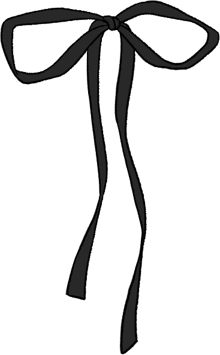
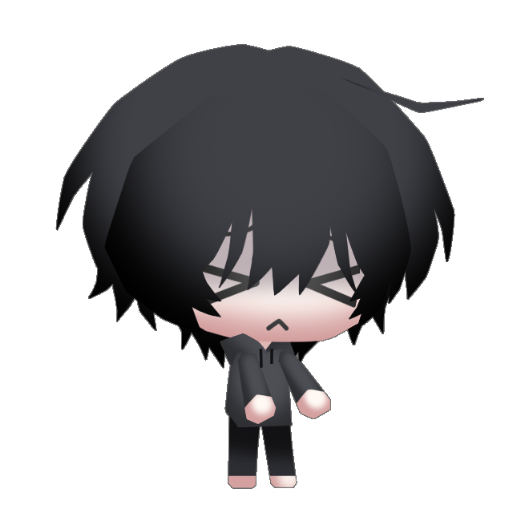
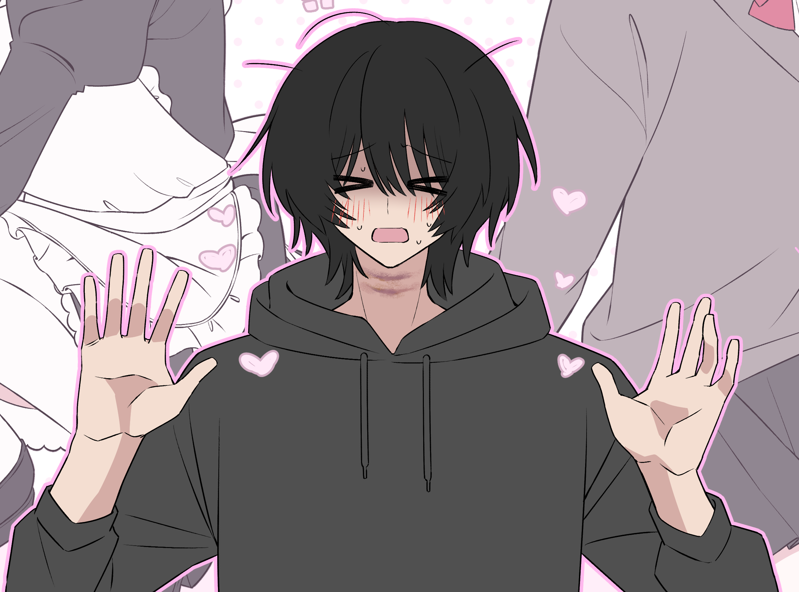
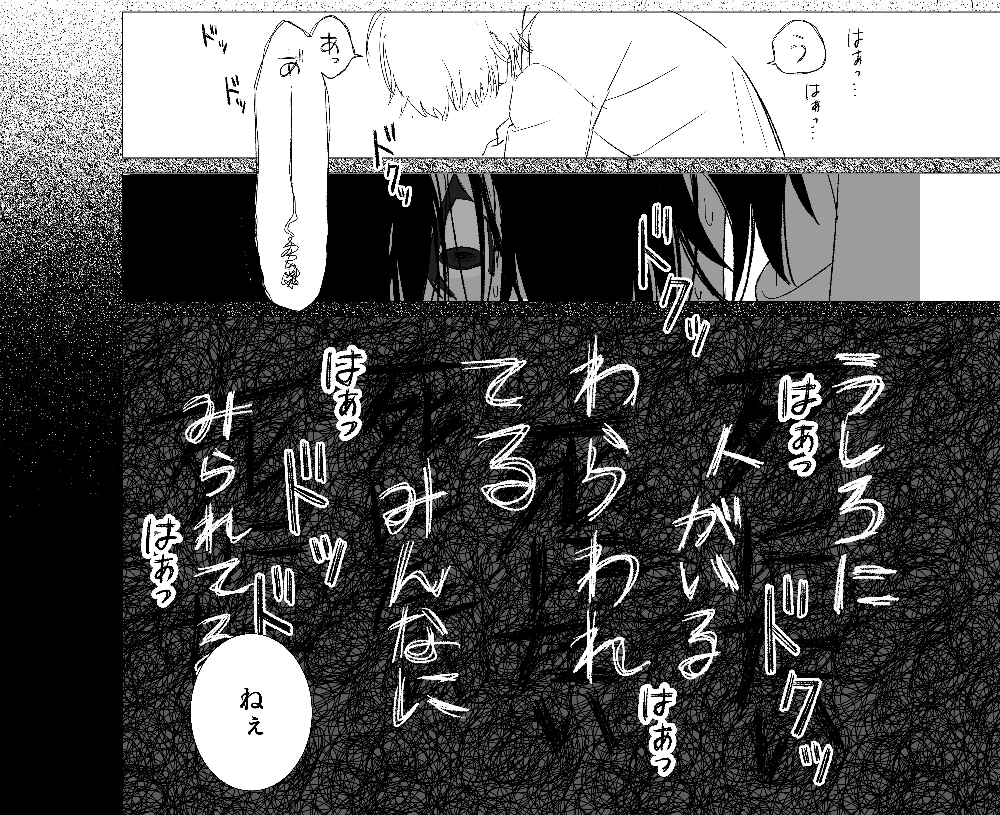
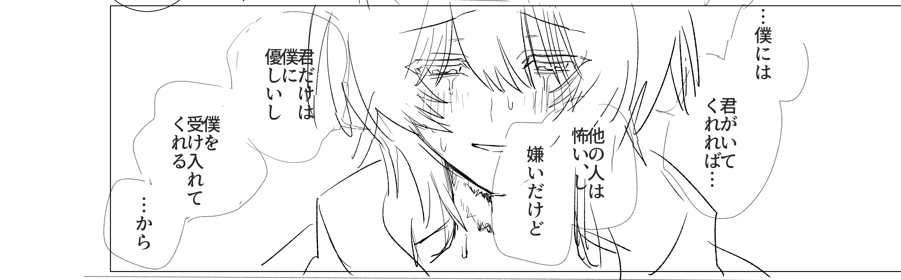

※注意※
夢主についての記録と妄想を格納したページです

| 名前 | 萌 |
|---|---|
| 誕生日 | 10月21日 |
| 好きなもの | 一人 |
| タイプ | 半自己投影型 |
| お相手 | 恵美 まどか |

| 年齢 | 22歳 |
|---|---|
| 身長 | 170cm |
| 血液型 | A型 |
| 一人称 | 僕 |
| 二人称 | 君 |
| 嫌いなもの | 大きい音 / 他人 |
| 性格 | 陰気 / ぽんこつ |
| 髪色 | 黒 |
| 目の色 | 灰色 |



まどかは2次元のキャラクターであり、現実世界には存在せず、実態を持たない。
全てははじめの妄想であり、都合のいい存在。画面を超えてはじめを救済してくれる天使。
まどかに虐げられることで、自分の抱える罪悪感や孤独から解放されている。
まどかが毒を吐くのは、はじめが自分自身を罰したいという欲求の表れであり、
まどかが優しくするのは、はじめが誰よりも愛されたいと切望している表れである。
だいたいいつも希死念慮に苛まれてる。
他人と関わることを極端に嫌う。 人と目を合わせられない。
怒られることが嫌い。 痛いことが嫌い。